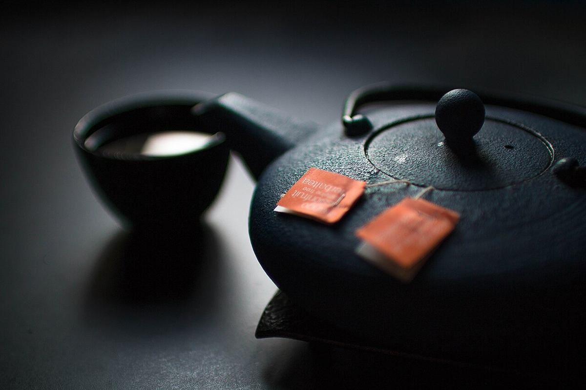
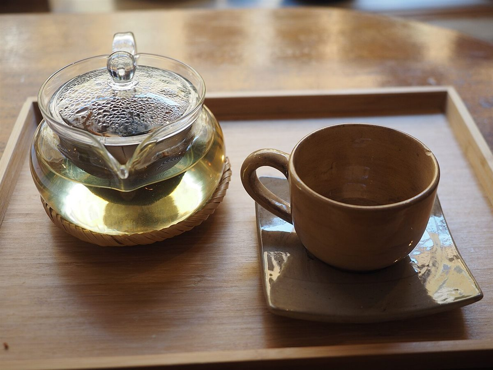
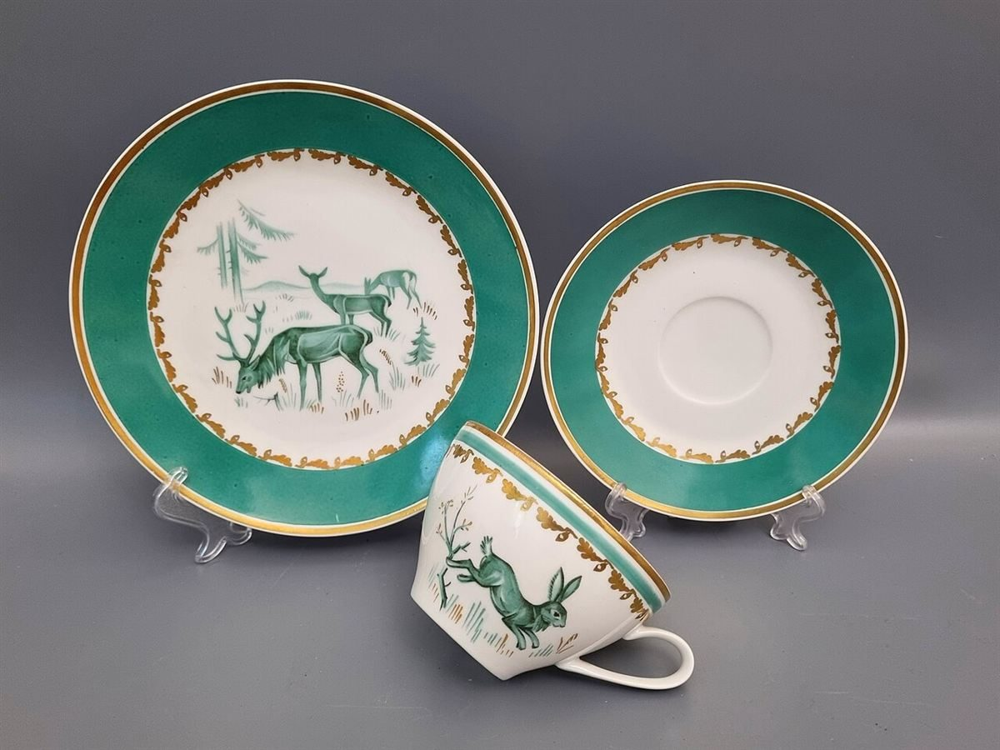
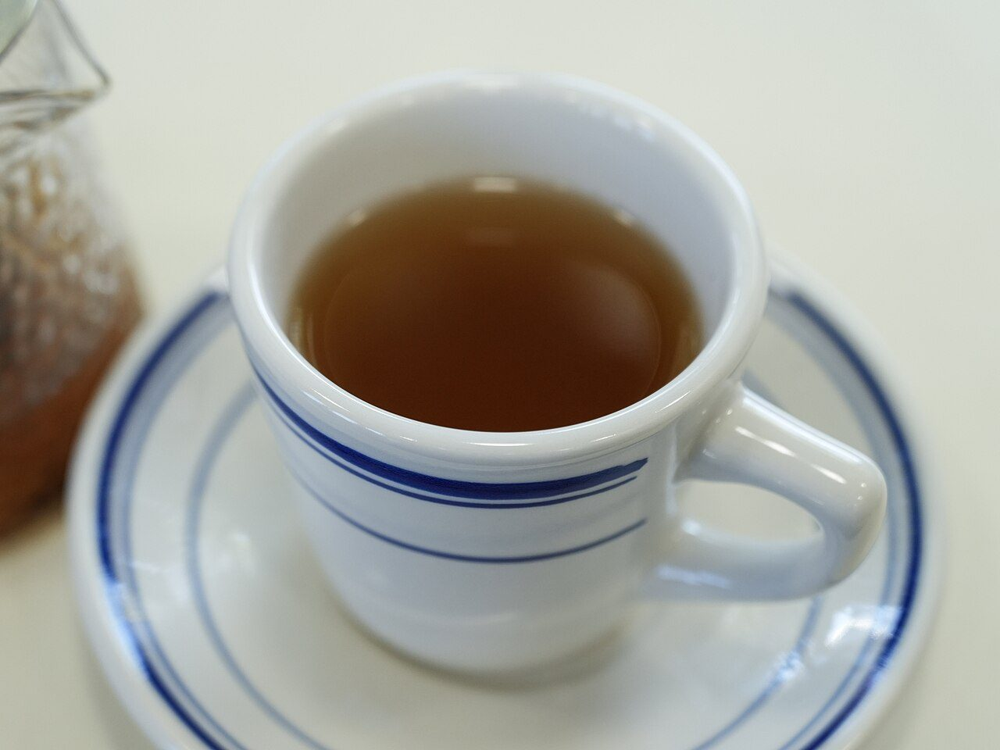
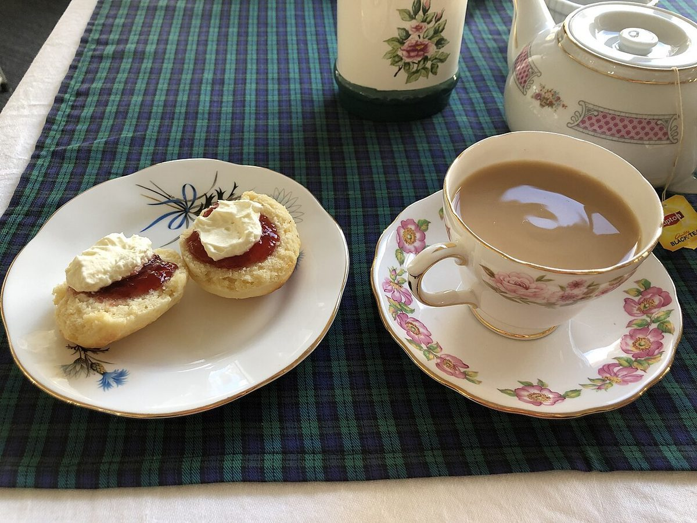
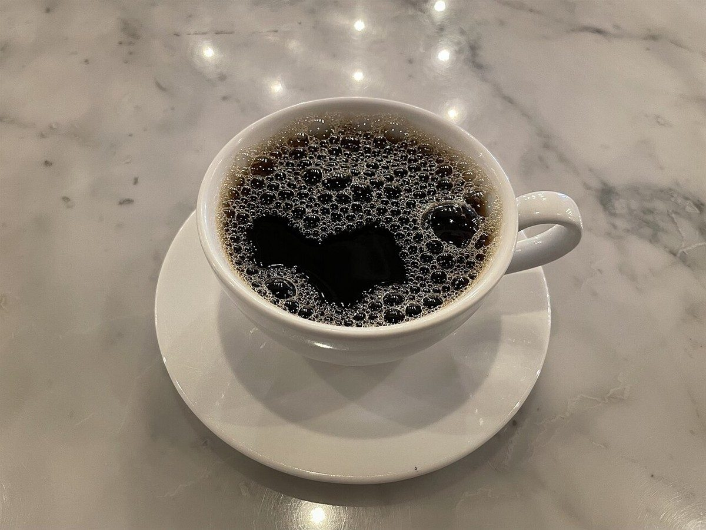
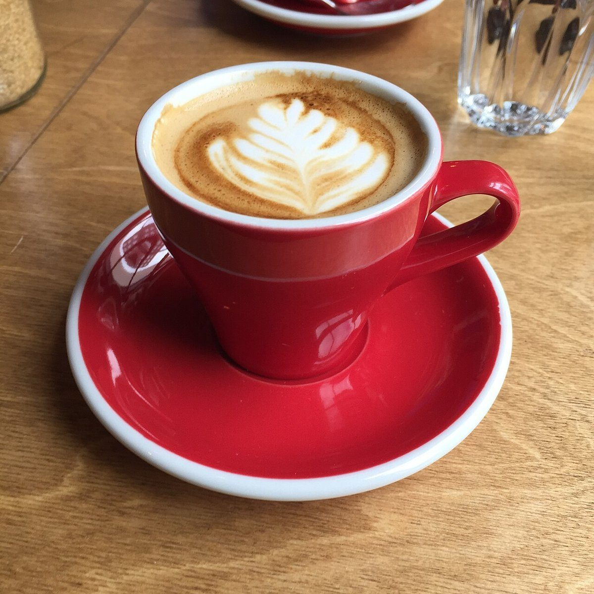

制作側の連想
ティーポットの部位を、配置図にしてみる
このサイトは、テーブルに置いたティーポットを図にしたつもりで作りました。六つの部位に番号をふり、上の図と並べています。制作側の連想で、お店の理念・由来とは無関係です。実際の商品や設備を示すものでもありません。
凡例
六つの部位
- 1蓋本体の口をふさぐ、つまみ付きのふた。
- 2胴お湯と茶葉を入れる、ふくらんだ本体。
- 3注ぎ口お茶を注ぐための、胴から伸びる細い口。
- 4持ち手胴の反対側に付く、手で持つための輪。
- 5茶こし胴の内側にある、茶葉を止める網。
- 6底ポットを台の上で安定させる、胴の下の足。
ギャラリー(イメージ)
ポットとカップの写真




写真はお茶まわりのイメージです。お店のものではなく、お店で提供している商品を示すものでもありません。
ひと息のイメージ
スコーンとコーヒーの写真



いずれもイメージ写真で、お店のメニューを示すものではありません。
パンの写真(イメージ)
白い背景のパン


ご案内
お店のこと(確認できたものだけ)
| 所在地 | 〒395-0043 長野県飯田市通り町2丁目1-1 |
|---|---|
| 電話 | 準備中 |
| 営業時間 | 準備中 |
| 定休日 | 準備中 |
| ご予約 | 準備中 |
| 駐車場 | 準備中 |
| SNS | Instagram @sanrengura_cafeindustry |